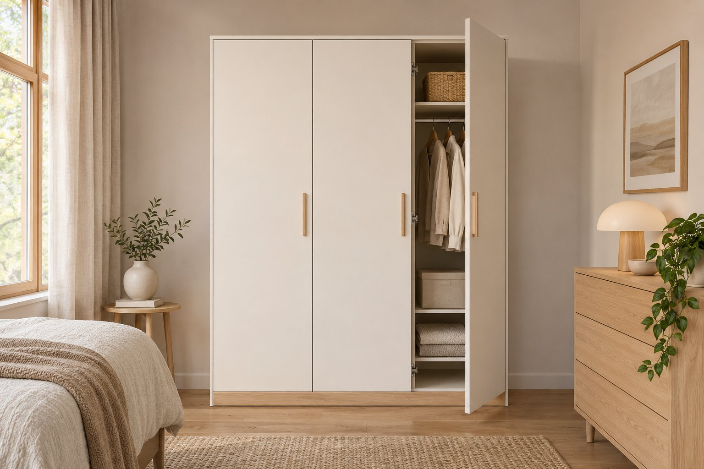

Шкаф «Сканди»
Светлый распашной шкаф

За распашными дверями можно сочетать штангу для повседневной одежды, полки для белья и нижний отсек для коробок. Секции удобно открывать по отдельности. Высоту полок и сторону открывания уточняют по планировке комнаты.
Характеристики
- Конфигурация
- Светлый распашной шкаф
- Установка
- Отдельно стоящий
- Двери
- Распашные
- Наполнение
- Штанга, переставляемые полки, нижний отсек
Возможные материалы
- Корпус из ЛДСП
- Светлые фасады из матового МДФ или ЛДСП
- Ручки с древесной фактурой
Преимущества
- Доступ к каждой секции отдельно
- Светлые фасады сочетаются с тёплым деревом